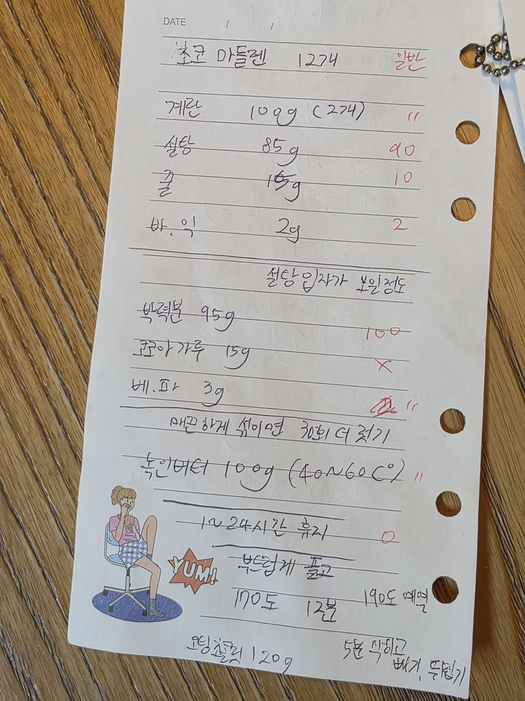

← 전체 레시피
구움과자
🐚 초코 마들렌
손으로 적은 노트를 그대로 옮긴 레시피입니다.
분량
12개
굽기
190℃ 예열 → 170℃ 12분
📷 원본 노트 사진 보기
재료
반죽 (괄호는 일반 마들렌 배합)
계란 100g (2개)
설탕 85g (90g)
꿀 10g
바닐라익스트랙 2g
박력분 95g (100g)
코코아가루 15g (일반은 생략)
베이킹파우더 3g
녹인 버터 100g (40~60℃)
코팅
코팅 초콜릿 120g
만드는 법
계란·설탕·꿀·바닐라를 설탕 입자가 보일 정도로만 섞는다.
박력분·코코아·베이킹파우더를 체 쳐 섞고, 매끈해지면 30회 더 젓는다.
40~60℃로 녹인 버터를 넣어 섞는다.
냉장고에서 1~24시간 휴지한다. (일반 배합은 휴지 생략 가능)
부드럽게 풀어 팬닝한다.
190℃ 예열 후 170℃에서 12분 굽는다.
5분 식히고 빼서 뒤집어 둔다. 코팅 초콜릿 120g으로 코팅한다.

원본 노트 사진 — 탭하면 크게 볼 수 있어요